Kod
library(kableExtra)
library(readxl)
library(ggplot2)
library(dplyr)
library(jtools)
library(DT)Raif Serkan Albayrak
31 Mayıs 2022
Bu yazıda farklı puan tipleri için soru bloklarının puan karşılığının nasıl hesaplandığı incelenmiştir. Örneğin SAY puan türünde, AYT sınavının Matematik bloğunda bir netin kaç puana denk geldiği bu yazıda açıklanan yöntemlerle bulunabilir. OSYM tarafından açıklanan dokümanlarda sınav puanlarının soru gruplarında elde edilen netlerin lineer bir fonksiyonu olduğu bilgisi verilmekte. Dolayısıyla kurulacak bir regresyon modeli sayesinde yuvarlama hataları dışında sınav puanı ile soru bloklarındaki netler arasında %100 açıklayıcılığa sahip modellerin elde edilebilmesi gerekmekte. Gerçekten de DİL puan türü dışında bu modeller bulunabildi. Ancak gene de bazı teknik sorunlarla da karşılaşıldı. Bazı bölümlere son sırada yerleşen öğrencilerin yaptığı netlerle açıklanan puanı arasında büyük tutarsızlıklar görüldü. Tutarsızlığın ne olduğu, bölümün ne olduğu, puanın ne olması gerekirken ne açıklandığı gösterildi.
Yazı iki bölümden oluşuyor. Birinci bölüm, puan hesaplama modellerinin anlatıldığı teknik kısım. İkinci bölüm ise bulgular üzerine bir tartışmayı, meta analizi içeriyor.
Geliştirilecek modeller, grafikler ve tablolar için ihtiyaç duyulan R kütüphaneleri yüklenerek başlanıyor.
Her puan türü1 için soru gruplarının çarpan değerini hesaplayabilmek için ATLAS’da yayınlanan TYT-AYT Net Sihirbazında bulunan veriden faydalanılmıştır. Önlisans verisine de adreste ufak bir değişiklikle ulaşılmaktadır. Dikkat edilirse sayfada seçilen bölüm için kontenjan bazında son yerleşen öğrencinin netleri ve orta-öğretim başarı puanı (OBP) verilmekte ancak bu öğrencinin puanı verilmemektedir. Aslında sayfada bu bilgi de mevcuttur2 fakat ATLAS bu bilgiyi göstermemeyi tercih etmektedir.
En güncel veri üzerinden çalışıldı ancak istenirse 2020 ve daha eski veriye de ulaşmak mümkündür3. Bu sayfada bulunan tüm lisans ve önlisans bölüm isimlerine gene sayfanın kodu içinden ulaşmak mümkündür. Bölüm isimlerinin bulunduğu dosya buradan indirilebilir.
# A tibble: 745 × 4
id bölüm tip PuanTuru
<dbl> <chr> <chr> <chr>
1 19001 ACİL YARDIM VE AFET YÖNETİMİ (FAKÜLTE) AYT SAY
2 20001 ACİL YARDIM VE AFET YÖNETİMİ (YÜKSEKOKUL) AYT SAY
3 19502 ADLİ BİLİMLER AYT SAY
4 19002 ADLİ BİLİŞİM MÜHENDİSLİĞİ AYT SAY
5 39001 ADLİ BİLİŞİM MÜHENDİSLİĞİ (M.T.O.K.) AYT SAY
6 19003 AĞAÇ İŞLERİ ENDÜSTRİ MÜHENDİSLİĞİ AYT SAY
7 50005 AĞAÇ İŞLERİ ENDÜSTRİ MÜHENDİSLİĞİ (M.T.O.K.) AYT SAY
8 10001 AİLE VE TÜKETİCİ BİLİMLERİ AYT EA
9 18002 AKTÜERYA BİLİMLERİ (FAKÜLTE) AYT SAY
10 20004 AKTÜERYA BİLİMLERİ (YÜKSEKOKUL) AYT SAY
# … with 735 more rowsVerinin ilk 480 satırı lisans gerisi onlisans bölümlerden oluşmakta. Her bölüm için adres çubuğundaki bölüm kodu değiştirilerek o bölümle ilgili tüm kontenjanlarda bulunan detaylara ulaşmak mümkündür. Basit bir döngü ve veri üzerinde her zamanki kadar zahmetli olan düzenlemeleri yaparak parametrelerin tahmininde kullanılan veri hazırlanmış olur. Ek olarak, puanlar hesaplanırken OBP katsayısının cezalı kullanılıp kullanılmadığını anlamak amacıyla her programın detay sayfasından yerleşen son öğrencinin Öğrenim durumu bilgisi de çekilip veriye eklenmiştir. Verinin hazır formu buradan indirilebilir.
# A tibble: 20,069 × 28
ProgramKodu Üniversite Yılı Türü Katsayı OBP Puan Yerl. `TYT Türkçe`
<dbl> <chr> <dbl> <chr> <dbl> <dbl> <dbl> <dbl> <dbl>
1 101290082 ARDAHAN ÜNİV.… 2021 Devl… 0.12 363. 246. 2 22.5
2 101890037 BAYBURT ÜNİV.… 2021 Devl… 0.12 361. 240. 1 15.5
3 102710387 ÇANAKKALE ONS… 2021 Devl… 0.12 429. 238. 62 23.8
4 111091394 SAĞLIK BİLİML… 2021 Devl… 0.12 398. 235. 41 19.5
5 104710336 GÜMÜŞHANE ÜNİ… 2021 Devl… 0.12 371. 227. 1 14
6 108990307 SELÇUK ÜNİV. … 2021 Devl… 0.12 366. 225. 62 10.2
7 101370270 ARTVİN ÇORUH … 2021 Devl… 0.12 327. 220. 7 16.5
8 109590048 MUNZUR ÜNİV. … 2021 Devl… 0.12 413. 218. 11 13.5
9 107710442 HATAY MUSTAFA… 2021 Devl… 0.12 462. 214. 52 NA
10 100890057 AKSARAY ÜNİV.… 2021 Devl… 0.12 417. 210. 25 12.5
# … with 20,059 more rows, and 19 more variables: `TYT Sosyal` <dbl>,
# `TYT Mat` <dbl>, `TYT Fen` <dbl>, `AYT Mat` <dbl>, `AYT Fizik` <dbl>,
# `AYT Kimya` <dbl>, `AYT Biyoloji` <dbl>, `AYT Türkçe` <dbl>,
# `AYT Tarih1` <dbl>, `AYT Coğrafya1` <dbl>, `AYT TDE` <dbl>,
# `AYT Tar2` <dbl>, `AYT Coğ2` <dbl>, `AYT Fel` <dbl>, `AYT Din` <dbl>,
# `YDT Dil` <dbl>, PuanTuru <fct>, BoluMKodu <dbl>, stuType <chr>Her puan türü için geliştirilen modeller ilgili alt başlıklarda sunulmuştur.
YKS puanlama sisteminin anlatıldığı daha önceki bir yazıda aşağıdaki diagram kullanılmıştı. Buna göre TYT Sınav puanı Temel Matematik, Türkçe, Fen Bilimleri ve Sosyal Bilimleri soru gruplarından toplanan puanlardan oluşur. Her soru grubunun etkisi farklıdır. Bazı soru gruplarından yapılan netler sonuçta hesaplanan puanı diğerlerinden daha fazla etkiler. İşte amaç soru gruplarının bu etkilerini tahmin etmektir. Bu amaçla basit bir regresyon modeli kurulmuştur.
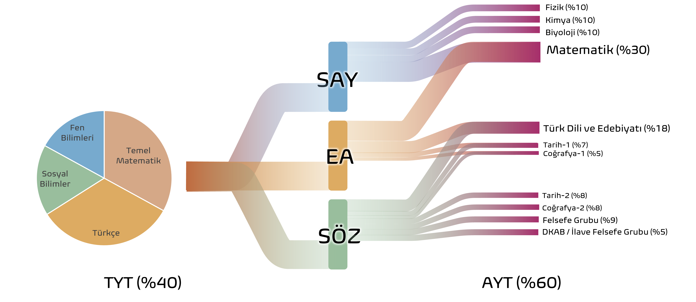 Her soru grubunda bulunan soru sayısı aşağıdaki tabloda verilmiştir. Bu sayıların modelleme üzerinde bir etkisi yoktur ancak model sonuçlarının yorumlanmasında kullanılacaktır.
| SINAV | Soru Grubu | Soru Sayısı |
|---|---|---|
| TYT | Temel Matematik | 40 |
| TYT | Türkçe | 40 |
| TYT | Fen Bilgisi | 20 |
| TYT | Sosyal Bilimler | 20 |
| AYT | Matematik | 40 |
| AYT | Fizik | 14 |
| AYT | Kimya | 13 |
| AYT | Biyoloji | 13 |
| AYT | Türk Dili ve Edebiyatı | 24 |
| AYT | Tarih 1 | 10 |
| AYT | Coğrafya 1 | 6 |
| AYT | Tarih 2 | 11 |
| AYT | Coğrafya 2 | 11 |
| AYT | Felsefe Grubu | 12 |
| AYT | DKAB | 6 |
| AYT | Dil Testi | 80 |
Regresyon modeli4 ile soru gruplarının sonuç puan üzerindeki etkisini gösteren katsayılar hesaplanacaktır. Modelin yapısı şu şekilde gösterilebilir:
\[ TYTPuan=c+\beta_1 \cdot TemelMatematik+\beta_2 \cdot Türkçe+\beta_3 \cdot FenBilimleri+\beta_4 \cdot SosyalBilimler+\varepsilon \] Katsayılar hesaplanmadan önce verideki yerleştirme puanlarından OBP etkisinin ayıklanması gerekmekte. OBP etkisi öğrencinin mezun olduğu lise ile yerleştiği program arasında bir bağlantı olmasına göre 0.18 ile 0.12 değerlerinden birini alıyor.
\[ TYT_{Sınav} = TYT_{Yerleştirme}-(0.12\: veya\: 0.18)\cdot OBP \]
Regresyon modelinin katsayılarının hesaplanacağı veride modellemeye başlamadan önce yapılması gereken detay gibi görünen ama oldukça kritik bir filtreleme gerekmektedir. Eğer bir öğrenci YKS sınavında bir programa yerleşirse bir sonraki yıl OBP katsayısı yarı yarıya kesiliyor. Diğer bir deyişle YKS Yerleşme Puanını hesaplamak için, normalde OBP puanı 0.12 (veya 0.18) ile çarpılıp YKS sınav sonuç puan ekleneceğine 0.06 (veya 0.09) ile çarpılıp eklenmektedir. Dolayısıyla regresyon katsayılarının hesaplanacağı veride bu gibi durumların filtrelenmesi gerekmekte. Ne var ki, YÖK ATLAS bu konuda net bilgi içermemekte. Aşağıdaki grafikte \(TYT_{Sınav}\) hesaplandıktan sonra yerleştirme ve sınav puanlarının çapraz grafiği gösterilmektedir. Açık renkli bölgeler 150 puanın altında kalan sınav puanlarını göstermektedir. Bu puanlar mümkün olmadığına göre5, bu programa son yerleşen adayların OBP katsayıları cezalı hesaplanmış olmalıdır.
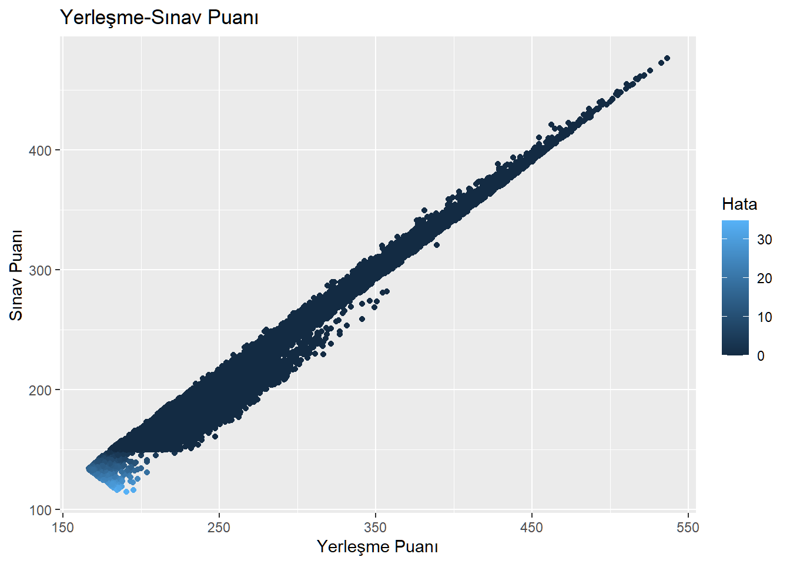
Mesela yukarıdaki grafikte 150 puan altında sınav puanlarına sahip öğrencilerin yerleştiği görünen programlara son sırada yerleşen öğrencilerin bilgilerine program detay sayfalarından da ulaşıldığında öğrencinin Öğrenim Durumu bilgisi aşağıdaki tablodaki gibi çıkıyor.
| Yerleşen Öğrencinin Öğrenim Durumu | Frekans |
|---|---|
| Bir üniversiteden daha önce mezun olmuş | 48 |
| Daha önce yerleşip kayıt yaptırmamış ya da kaydı silinmiş | 425 |
| Lise mezunu, daha önce hiç üniversiteye yerleşmemişti. | 234 |
| Üniversitede öğrenci iken sınava girip buraya yerleşti | 876 |
150 puanın altındaki gözlemlerden elde edilen yukarıdaki tabloda Liseden yeni mezun ÖSYSye ilk girişinde yerleşti değerinin olmadığı görülmektedir. Dolayısıyla bu öğrenciler için OBP cezalı hesaplanmıştır.
| Yerleşen Öğrencinin Öğrenim Durumu | Frekans |
|---|---|
| Bir üniversiteden daha önce mezun olmuş | 1329 |
| Daha önce yerleşip kayıt yaptırmamış ya da kaydı silinmiş | 1122 |
| Lise mezunu, daha önce hiç üniversiteye yerleşmemişti. | 8948 |
| Liseden yeni mezun ÖSYSye ilk girişinde yerleşti | 5592 |
| Üniversitede öğrenci iken sınava girip buraya yerleşti | 3078 |
OBP’nin puan üzerindeki etkisini kontrol altına alabilmek amacıyla verinin sadece Liseden yeni mezun ÖSYSye ilk girişinde yerleşti öğrenim durumuna sahip kısmı filtreleniyor.
Veriyi modele beslemeden önce son olarak TYT puanı ile yerleşim yapılan bölümler filtreleniyor.
Verinin TYT ile yerleştirme yapılan kısmı filtrelenerek katsayılar aşağıda kurulan model ile tahminleniyor. Model veriyi %99.9 oranda başarıyla açıklıyor.
| Observations | 2320 |
| Dependent variable | SinavPuan |
| Type | OLS linear regression |
| F(4,2315) | 3063149.52204 |
| R² | 0.99981 |
| Adj. R² | 0.99981 |
| Est. | S.E. | t val. | p | |
|---|---|---|---|---|
| (Intercept) | 97.30995 | 0.02600 | 3742.64952 | 0.00000 |
| `TYT Mat` | 4.52820 | 0.00303 | 1494.56400 | 0.00000 |
| `TYT Türkçe` | 2.92197 | 0.00147 | 1985.94936 | 0.00000 |
| `TYT Fen` | 3.18509 | 0.00400 | 796.57918 | 0.00000 |
| `TYT Sosyal` | 2.98252 | 0.00263 | 1135.15370 | 0.00000 |
| Standard errors: OLS |
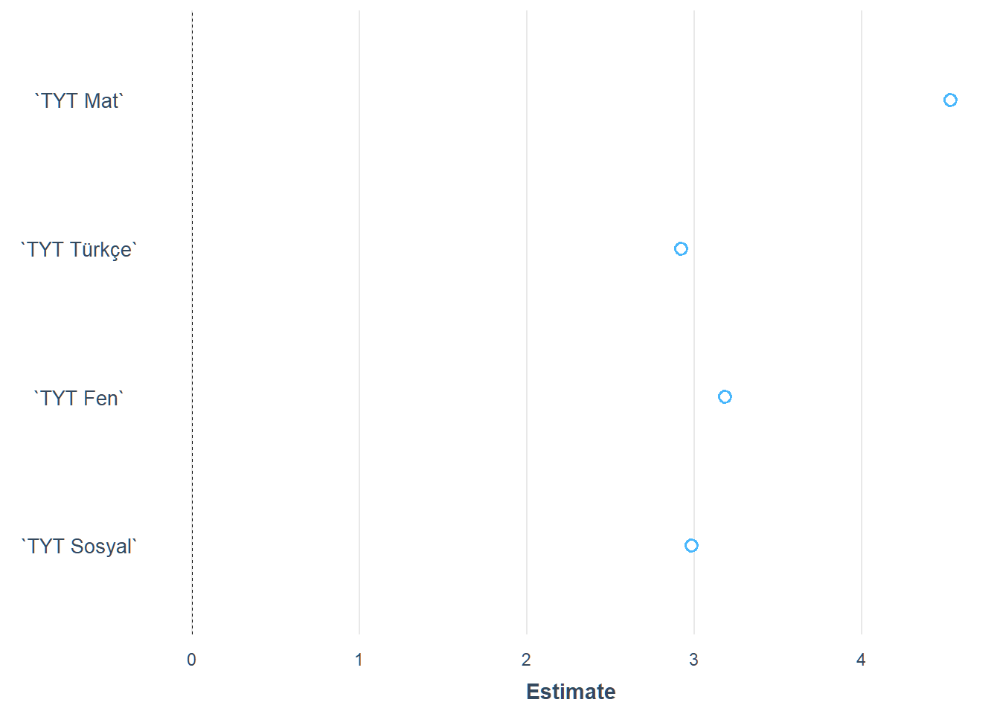
Her istatistiki model hata içerir ve bu hataların incelenmesi sonucu genellikle modelin iyileşmesine yönelik adımlar atılır. Burada hata ile kastedilen modelin tahmini ile gerçek puan arasındaki farklılıktır. Aşağıdaki garfikte iki gözlemdeki hatanın büyüklüğü dikkat çekmektedir.
results <- data.frame(real = modeldataTYT$SinavPuan,model=predict(TYTModel))
results$fark <- results$real-results$model
results$absfark <- abs(results$real-results$model)
ggplot(results, aes(x=real, y=fark, colour=absfark))+geom_point() +
labs(title = "SAY Puanı Modelinde Hata Terimleri",
x = "Gözlem",
y = "Gözlem - Model",
colour= "Hata") +
geom_abline(slope = 0, intercept = 0, colour="orange", size=1)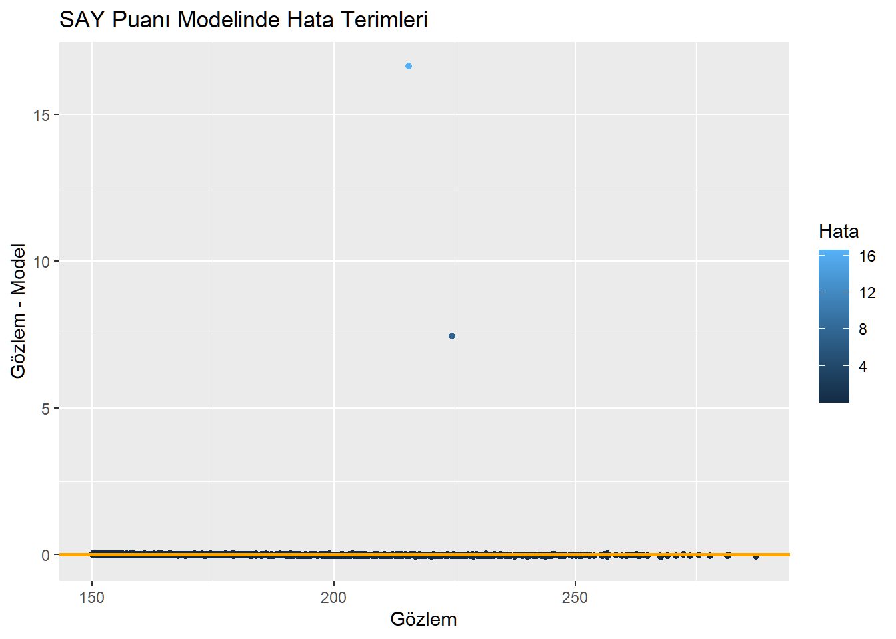
Hataların ekstrem olduğu bu gözlemler çekildiğinde Üsküdar Üniversitesi Çocuk Gelişimi Burslu kontenjanına ve Avrasya Üniversitesi Diş Protez Teknolojisi Burslu programına yerleşen öğrencilerin puanları olması gerekenden 7.45 ve 16.67 puan daha fazla hesaplanmış görünüyor. Umarız buradaki maddi hata ATLAS veri tabanındaki netlerdedir.
| ProgramKodu | 206550021 | 200351003 |
| Üniversite | ÜSKÜDAR ÜNİV. - (Burslu) (2 Yıllık) | AVRASYA ÜNİV. - (Burslu) (2 Yıllık) |
| Yılı | 2021 | 2021 |
| Türü | Vakıf | Vakıf |
| Katsayı | 0.12 | 0.12 |
| OBP | 382.649 | 369.700 |
| Puan | 270.4194 | 259.9283 |
| Yerl. | 12 | 9 |
| TYT Türkçe | 24.25 | 19.50 |
| TYT Sosyal | 15.25 | 9.25 |
| TYT Mat | 0.75 | 2.00 |
| TYT Fen | 0.0 | 2.5 |
| PuanTuru | TYT | TYT |
| BoluMKodu | 30146 | 30151 |
| SinavPuan | 224.5015 | 215.5643 |
Bu gözlemleri veriden çıkarıp model katsayıları tekrar hesaplanıyor. Artık modelde hata yok. Model veriyi %100 oranında açıklıyor. TYT sınavına giren öğrencilerin başarılarına göre standardize edilen soru gruplarının puan karşılıkları regresyon modelinin katsayıları olarak bulundu.
OSYM tarafından eklenen 100 puan çeşitli transformasyonlar sonucu 97.34’e düşmüştür. Her soru grubunun puanlamaya etkisi regresyon modelinin katsayılarında temsil edilmektedir. Buna göre en değerli sorular Matematik sorularıdır. Her matematik neti 4.53 puan anlamına gelmektedir. 2021 yılı için ikinci sırada en değerli puanların Fen Bilimleri soru grubunda olduğu görülmektedir. Bir fen bilimleri neti 3.18 puana denk gelmektedir. Türkçe ve Sosyal bilimler sorularının puanları yaklaşık olarak aynıdır. Grafikte soru gruplarının ağırlıkları görsel olarak ifade edilmiştir. Yıldan yıla bu katsayılar sınava katılan öğrencilerin performansına bağlı olarak değişmektedir. Bir soru grubunda Türkiye genelinde az başarılı olunursa bu soru grubunun değeri artmaktadır. Burada amaç öğrencileri birbirinden mümkün olduğunca ayırabilmektir.
| Observations | 2318 |
| Dependent variable | SinavPuan |
| Type | OLS linear regression |
| F(4,2313) | 365033785663367.31250 |
| R² | 1.00000 |
| Adj. R² | 1.00000 |
| Est. | S.E. | t val. | p | |
|---|---|---|---|---|
| (Intercept) | 97.33911 | 0.00000 | 40877845.52738 | 0.00000 |
| `TYT Mat` | 4.52956 | 0.00000 | 16333594.42471 | 0.00000 |
| `TYT Türkçe` | 2.92085 | 0.00000 | 21686245.09984 | 0.00000 |
| `TYT Fen` | 3.18450 | 0.00000 | 8700242.49859 | 0.00000 |
| `TYT Sosyal` | 2.97902 | 0.00000 | 12374553.77474 | 0.00000 |
| Standard errors: OLS |
Yıldan yıla bu katsayılar sınava katılan öğrencilerin performansına bağlı olarak değişmektedir. Bir soru grubunda Türkiye genelinde az başarılı olunursa bu soru grubunun değeri artmaktadır. Standardizasyonun burada görevi öğrenciler arasındaki başarı farkını iyi bilinen istatistiki parametreler üzerinden ifade edebilme yeteneği vermesidir. Bu sayede puanlar belli değerler arasına taşınabilmektedir. Örneğin sınavda en başarı öğrenci soruların tamamını doğru yanıtlamış olmasa bile puanı 500’e taşınabilir.
| Soru Grubu | 2019 | 2020 | 2021 |
|---|---|---|---|
| Matematik | 3.72544 | 3.34392 | 4.529560 |
| Türkçe | 3.10474 | 3.24011 | 2.920850 |
| Fen Bilimleri | 3.49299 | 3.40551 | 3.184504 |
| Sosyal Bilimler | 3.02917 | 3.65789 | 2.979017 |
| SABİT | 100.06900 | 99.42090 | 97.339196 |
SAYısal puanlarının da hesaplanmasında kullanılan katsayılar benzer şekilde bulunabilir. SAY puanın TYT puanı ve AYT’den Matematik, Fizik, Kimya ve Biyoloji sorularından oluştuğu biliniyor. Kurulan modelde herhangi bir belirsizlik bulunmuyor. Veri %100 başarıyla açıklanabiliyor. Modele göre AYT soru gruplarının puan üzerindeki etkisinin TYT’ye göre daha fazla olduğu görülmektedir. Bir önceki bölümde TYT puanı için hesaplanan katsayılar ile bu modeldeki TYT soru gruplarının katsayıları ilişkilidir. Örneğin TYT modelinde bir matematik sorusunun katsayısının türkçe sorusunun katsayısına oranı 4.53/2.92 hesaplandığıda 1.55 elde edilir. SAY puanı için oluşturulan modelde de aynı oran 1.76/1.13 hesabından bulunabilir.
| Observations | 1455 |
| Dependent variable | SinavPuan |
| Type | OLS linear regression |
| F(8,1446) | 10988987483543.21484 |
| R² | 1.00000 |
| Adj. R² | 1.00000 |
| Est. | S.E. | t val. | p | |
|---|---|---|---|---|
| (Intercept) | 98.19313 | 0.00004 | 2702320.89215 | 0.00000 |
| `TYT Mat` | 1.75757 | 0.00000 | 875358.41506 | 0.00000 |
| `TYT Türkçe` | 1.13335 | 0.00000 | 715811.60055 | 0.00000 |
| `TYT Fen` | 1.23565 | 0.00000 | 422010.58365 | 0.00000 |
| `TYT Sosyal` | 1.15593 | 0.00000 | 465868.10405 | 0.00000 |
| `AYT Mat` | 3.40447 | 0.00000 | 1855341.58517 | 0.00000 |
| `AYT Fizik` | 3.47680 | 0.00000 | 1000701.61504 | 0.00000 |
| `AYT Kimya` | 2.46429 | 0.00000 | 724368.04263 | 0.00000 |
| `AYT Biyoloji` | 2.20584 | 0.00000 | 659395.54832 | 0.00000 |
| Standard errors: OLS |
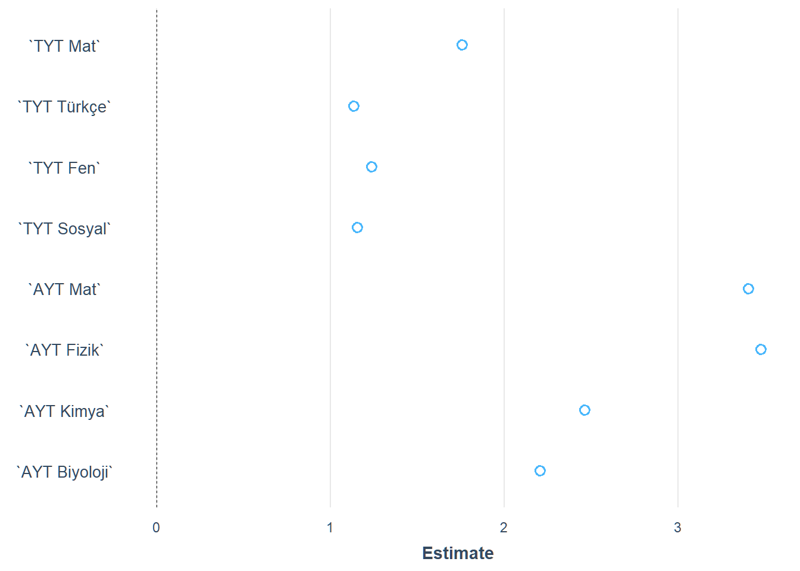
EA puanı TYT sorularına ek olarak AYT’den Matematik, Türk Dili ve Edebiyatı, Tarih-1 ve Coğrafya-1 soru gruplarından oluşmaktadır.
| Observations | 943 |
| Dependent variable | SinavPuan |
| Type | OLS linear regression |
| F(8,934) | 9731342.24535 |
| R² | 0.99999 |
| Adj. R² | 0.99999 |
| Est. | S.E. | t val. | p | |
|---|---|---|---|---|
| (Intercept) | 92.47708 | 0.03552 | 2603.45109 | 0.00000 |
| `TYT Mat` | 1.85923 | 0.00182 | 1023.83970 | 0.00000 |
| `TYT Türkçe` | 1.20199 | 0.00141 | 849.53286 | 0.00000 |
| `TYT Fen` | 1.30702 | 0.00236 | 553.10711 | 0.00000 |
| `TYT Sosyal` | 1.22348 | 0.00216 | 567.08783 | 0.00000 |
| `AYT Mat` | 3.60540 | 0.00170 | 2124.64803 | 0.00000 |
| `AYT Türkçe` | 3.02357 | 0.00172 | 1761.62815 | 0.00000 |
| `AYT Tarih1` | 3.34516 | 0.00345 | 970.18103 | 0.00000 |
| `AYT Coğrafya1` | 2.37120 | 0.00512 | 463.37878 | 0.00000 |
| Standard errors: OLS |
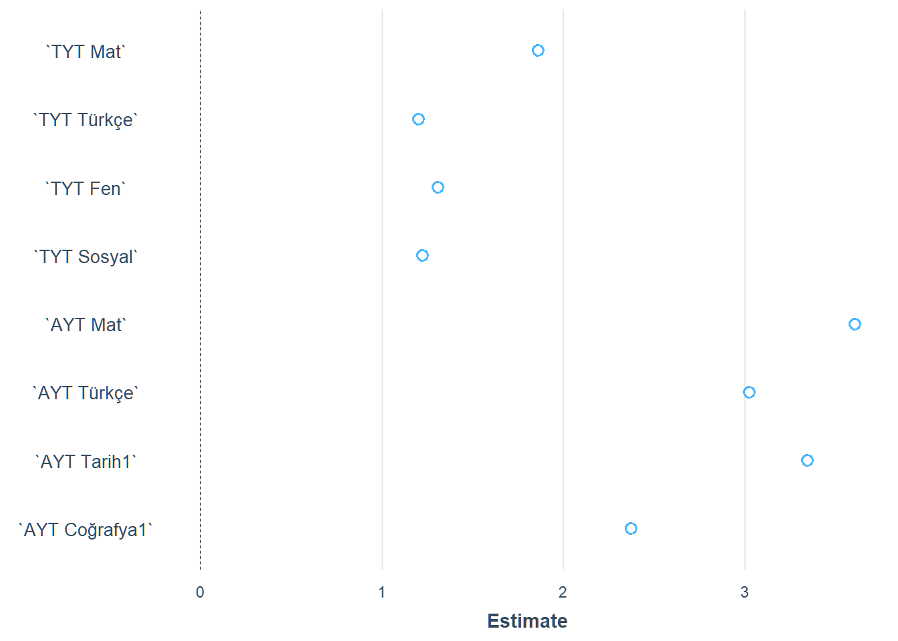
Modelin açıklayıcılığının tam olarak %100 olmaması nedeniyle hatalara bakılıyor. Bir programda modelin hesapladığı ile gerçek puan arasında 5 puandan fazla fark olduğu görülüyor. Hesaplama hatası yapılan programın Uluslararası Saraybosna Üniversitesi %50 İndirimli Psikoloji olduğu görülüyor. Bu program için listelenen netler o puana denk gelmiyor, hesaplanmış olan puan, olması gerekenin 5 puandan fazla üstünde.
results <- data.frame(real = modeldataEA$SinavPuan,model=predict(EAModel))
results$fark <- results$real-results$model
results$absfark <- abs(results$real-results$model)
ggplot(results, aes(x=real, y=fark, colour=absfark))+geom_point() +
labs(title = "EA Puanı Modelinde Hata Terimleri",
x = "Gözlem",
y = "Gözlem - Model",
colour= "Hata") +
geom_abline(slope = 0, intercept = 0, colour="orange", size=1)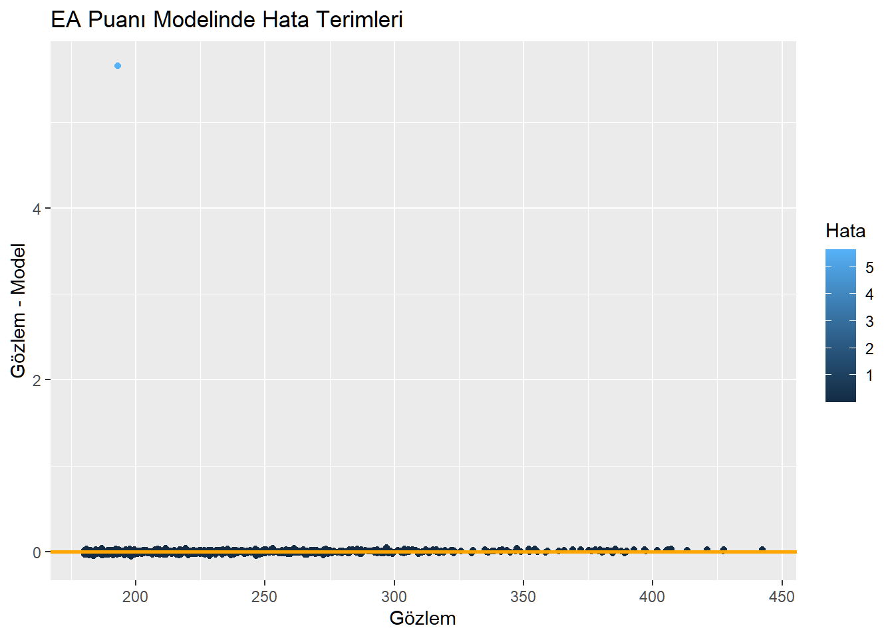
| ProgramKodu | 408810065 |
| Üniversite | ULUSLARARASI SARAYBOSNA ÜNİV. - (%50 İndirimli) (4 Yıllık) |
| Yılı | 2021 |
| Türü | Yabancı |
| Katsayı | 0.12 |
| OBP | 283.049 |
| Puan | 227.0003 |
| Yerl. | 5 |
| TYT Türkçe | 27.25 |
| TYT Sosyal | 10.75 |
| TYT Mat | 1.25 |
| TYT Fen | 0 |
| AYT Mat | 1 |
| AYT Türkçe | 7.75 |
| AYT Tarih1 | 2.5 |
| AYT Coğrafya1 | 4.75 |
| PuanTuru | EA |
| BoluMKodu | 10169 |
| SinavPuan | 193.0344 |
ÖSYM tarafından hesaplama hatası yapılan veya YÖK ATLAS sayfasında maddi hata yapılan program veriden çıkartılıp model tekrar kurulduğunda beklendiği gibi açıklayıcılık %100 oluyor.
| Observations | 942 |
| Dependent variable | SinavPuan |
| Type | OLS linear regression |
| F(8,933) | 370156189469389.18750 |
| R² | 1.00000 |
| Adj. R² | 1.00000 |
| Est. | S.E. | t val. | p | |
|---|---|---|---|---|
| (Intercept) | 92.49283 | 0.00001 | 16062485.22705 | 0.00000 |
| `TYT Mat` | 1.86088 | 0.00000 | 6319175.50209 | 0.00000 |
| `TYT Türkçe` | 1.19997 | 0.00000 | 5226503.28843 | 0.00000 |
| `TYT Fen` | 1.30829 | 0.00000 | 3415052.81313 | 0.00000 |
| `TYT Sosyal` | 1.22387 | 0.00000 | 3499591.58502 | 0.00000 |
| `AYT Mat` | 3.60460 | 0.00000 | 13103065.48013 | 0.00000 |
| `AYT Türkçe` | 3.02628 | 0.00000 | 10863234.16466 | 0.00000 |
| `AYT Tarih1` | 3.34531 | 0.00000 | 5985598.71296 | 0.00000 |
| `AYT Coğrafya1` | 2.36514 | 0.00000 | 2849257.09525 | 0.00000 |
| Standard errors: OLS |
SÖZ puanı TYT sorularına ek olarak AYT’den Türk Dili ve Edebiyatı6, Tarih-1, Coğrafya-1, Tarih-2, Coğrafya-2, Felsefe ve DKAB soru gruplarından oluşmaktadır.
| Observations | 641 |
| Dependent variable | SinavPuan |
| Type | OLS linear regression |
| F(11,629) | 2375763.13497 |
| R² | 0.99998 |
| Adj. R² | 0.99998 |
| Est. | S.E. | t val. | p | |
|---|---|---|---|---|
| (Intercept) | 92.95995 | 0.05146 | 1806.45264 | 0.00000 |
| `TYT Mat` | 1.84624 | 0.00385 | 479.71493 | 0.00000 |
| `TYT Türkçe` | 1.19105 | 0.00240 | 495.51744 | 0.00000 |
| `TYT Fen` | 1.30602 | 0.00620 | 210.48377 | 0.00000 |
| `TYT Sosyal` | 1.22121 | 0.00429 | 284.88322 | 0.00000 |
| `AYT TDE` | 3.01606 | 0.00325 | 928.00768 | 0.00000 |
| `AYT Tarih1` | 3.32421 | 0.00620 | 536.32545 | 0.00000 |
| `AYT Coğrafya1` | 2.33997 | 0.00881 | 265.52474 | 0.00000 |
| `AYT Tar2` | 4.98439 | 0.00576 | 864.61791 | 0.00000 |
| `AYT Coğ2` | 2.60731 | 0.00630 | 413.92581 | 0.00000 |
| `AYT Fel` | 3.65005 | 0.00523 | 698.22722 | 0.00000 |
| `AYT Din` | 2.72409 | 0.00863 | 315.57585 | 0.00000 |
| Standard errors: OLS |
SÖZel puan türünde de bir programın puan hesaplamasında bir hata olduğu görülmekte. Hata yapılan program Tokat GaziOsmanPaşa Üniversitesi Sosyal Bilgiler Öğretmenliği programı. Yapılan hesaplama hatası 6 puanın üzerinde.
results <- data.frame(real = modeldataSOZ$SinavPuan,model=predict(SOZModel))
results$fark <- results$real-results$model
results$absfark <- abs(results$real-results$model)
ggplot(results, aes(x=real, y=fark, colour=absfark))+geom_point() +
labs(title = "SÖZ Puanı Modelinde Hata Terimleri",
x = "Gözlem",
y = "Gözlem - Model",
colour= "Hata") +
geom_abline(slope = 0, intercept = 0, colour="orange", size=1)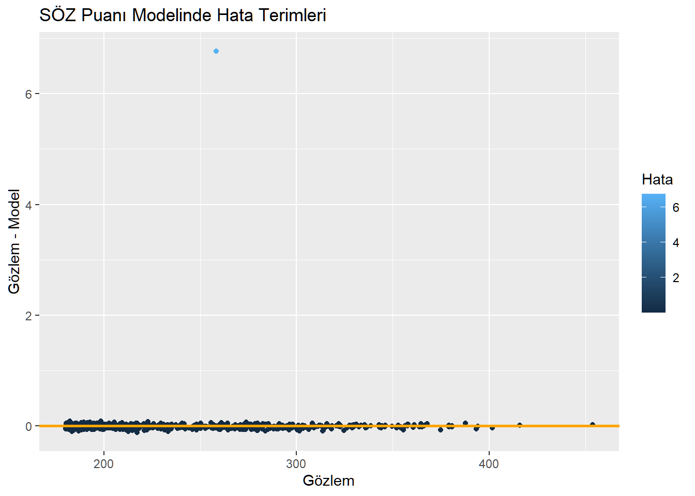
| ProgramKodu | 104310058 |
| Üniversite | TOKAT GAZİOSMANPAŞA ÜNİV. - (4 Yıllık) |
| Yılı | 2021 |
| Türü | Devlet |
| Katsayı | 0.12 |
| OBP | 369.5 |
| Puan | 302.791 |
| Yerl. | 52 |
| TYT Türkçe | 20.25 |
| TYT Sosyal | 12.5 |
| TYT Mat | 1.25 |
| TYT Fen | 1.75 |
| AYT Tarih1 | 2.75 |
| AYT Coğrafya1 | 2.25 |
| AYT TDE | 16.5 |
| AYT Tar2 | 2.25 |
| AYT Coğ2 | 6 |
| AYT Fel | 5.75 |
| AYT Din | 1 |
| PuanTuru | SÖZ |
| BoluMKodu | 10192 |
| SinavPuan | 258.451 |
Daha önce de olduğu gibi modele zarar veren bu hatalı veri silinip model tekrar kurulduğunda açıklayıcılık %100 olmuştur.
| Observations | 640 |
| Dependent variable | SinavPuan |
| Type | OLS linear regression |
| F(11,628) | 197787496242076.15625 |
| R² | 1.00000 |
| Adj. R² | 1.00000 |
| Est. | S.E. | t val. | p | |
|---|---|---|---|---|
| (Intercept) | 92.89613 | 0.00001 | 16452129.88329 | 0.00000 |
| `TYT Mat` | 1.85106 | 0.00000 | 4383276.75445 | 0.00000 |
| `TYT Türkçe` | 1.19364 | 0.00000 | 4527165.32019 | 0.00000 |
| `TYT Fen` | 1.30139 | 0.00000 | 1912960.62792 | 0.00000 |
| `TYT Sosyal` | 1.21742 | 0.00000 | 2589814.34897 | 0.00000 |
| `AYT TDE` | 3.01032 | 0.00000 | 8430925.97470 | 0.00000 |
| `AYT Tarih1` | 3.32767 | 0.00000 | 4897752.57128 | 0.00000 |
| `AYT Coğrafya1` | 2.35266 | 0.00000 | 2431997.91718 | 0.00000 |
| `AYT Tar2` | 4.98424 | 0.00000 | 7889240.39567 | 0.00000 |
| `AYT Coğ2` | 2.60652 | 0.00000 | 3775806.78405 | 0.00000 |
| `AYT Fel` | 3.64756 | 0.00000 | 6365712.97899 | 0.00000 |
| `AYT Din` | 2.74091 | 0.00000 | 2888646.49565 | 0.00000 |
| Standard errors: OLS |
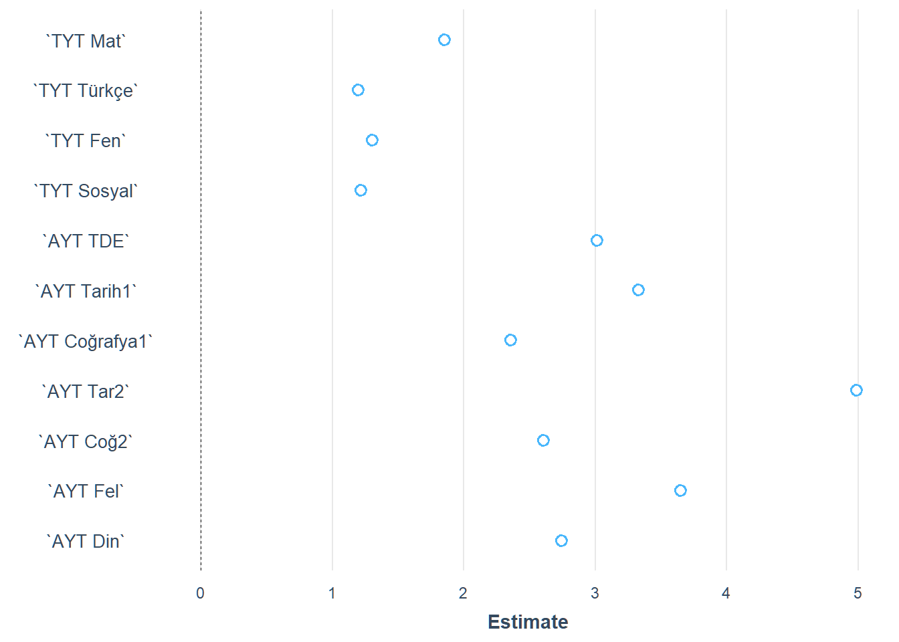
Dil puan türü TYT sınavına ek olarak Dil sınavında alınan netler üzerinden hesaplanır.
| Observations | 233 |
| Dependent variable | SinavPuan |
| Type | OLS linear regression |
| F(5,227) | 17880.27217 |
| R² | 0.99747 |
| Adj. R² | 0.99741 |
| Est. | S.E. | t val. | p | |
|---|---|---|---|---|
| (Intercept) | 95.38672 | 0.92750 | 102.84268 | 0.00000 |
| `TYT Mat` | 2.19473 | 0.07459 | 29.42411 | 0.00000 |
| `TYT Türkçe` | 1.46405 | 0.04615 | 31.72700 | 0.00000 |
| `TYT Fen` | 1.97779 | 0.09102 | 21.72874 | 0.00000 |
| `TYT Sosyal` | 1.59498 | 0.07370 | 21.64091 | 0.00000 |
| `YDT Dil` | 2.55899 | 0.01354 | 189.06071 | 0.00000 |
| Standard errors: OLS |
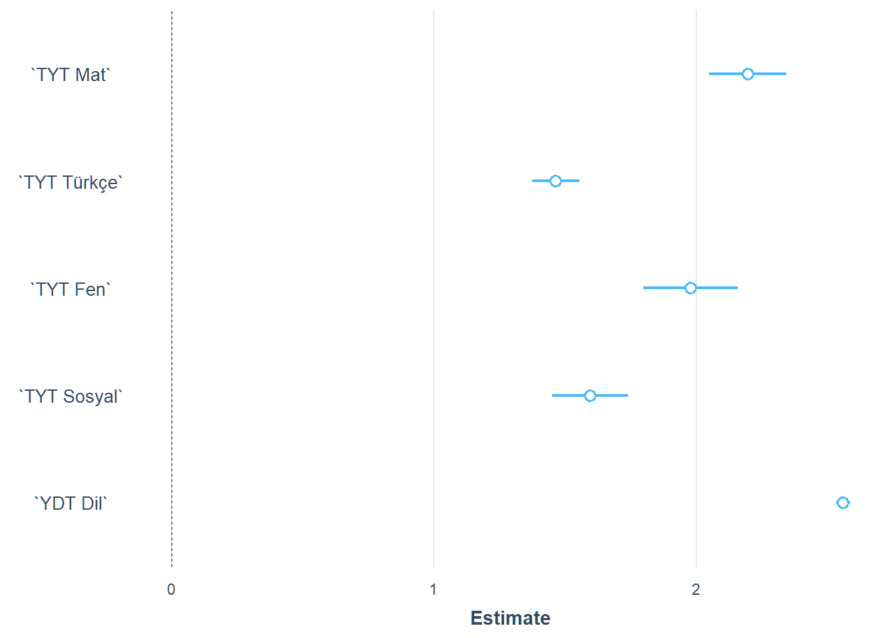
İlk modelin açıklayıcılığı %100 olmadığı için hatalar inceleniyor. Sonuçta sadece bir iki programda değil hemen her programda modelin hesapladığı değer ile gerçek değer arasında sapma olduğu görülüyor.
results <- data.frame(real = modeldataDIL$SinavPuan,model=predict(DILModel))
results$fark <- results$real-results$model
results$absfark <- abs(results$real-results$model)
ggplot(results, aes(x=real, y=fark, colour=absfark))+geom_point() +
labs(title = "DİL Puanı Modelinde Hata Terimleri",
x = "Gözlem",
y = "Gözlem - Model",
colour= "Hata") +
geom_abline(slope = 0, intercept = 0, colour="orange", size=1)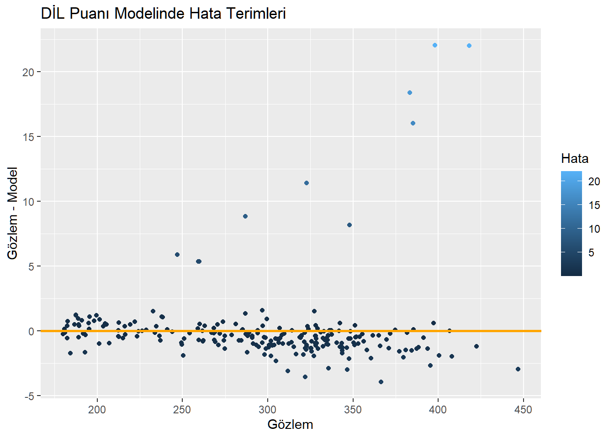
Hatanın beşten büyük olduğu durumlar filtrelendiğinde ve bu programlar için detaylı çalışma yapıldığında hatanın kaynağına ulaşılamıyor.
| ProgramKodu | 105610088 | 202210340 | 110090093 | 204090121 | 202210344 | 203211095 | 107090216 | 109290320 | 104010025 | 206010981 |
| Üniversite | İSTANBUL ÜNİV. - (4 Yıllık) | İSTANBUL 29 MAYIS ÜNİV. - (Burslu) (4 Yıllık) | ANKARA YILDIRIM BEYAZIT ÜNİV. - (4 Yıllık) | KTO KARATAY ÜNİV. - (Burslu) (4 Yıllık) | İSTANBUL 29 MAYIS ÜNİV. - (Burslu) (4 Yıllık) | İSTANBUL SABAHATTİN ZAİM ÜNİV. - (Burslu) (4 Yıllık) | NECMETTİN ERBAKAN ÜNİV. - (4 Yıllık) | SÜLEYMAN DEMİREL ÜNİV. - (4 Yıllık) | GALATASARAY ÜNİV. - (Fransızca) (4 Yıllık) | YAŞAR ÜNİV. - (İngilizce) (Burslu) (4 Yıllık) |
| Yılı | 2021 | 2021 | 2021 | 2021 | 2021 | 2021 | 2021 | 2021 | 2021 | 2021 |
| Türü | Devlet | Vakıf | Devlet | Vakıf | Vakıf | Vakıf | Devlet | Devlet | Devlet | Vakıf |
| Katsayı | 0.12 | 0.12 | 0.12 | 0.12 | 0.12 | 0.12 | 0.12 | 0.12 | 0.12 | 0.12 |
| OBP | 336.300 | 410.350 | 371.800 | 357.150 | 434.169 | 379.000 | 341.150 | 299.850 | 493.319 | 395.744 |
| Puan | 363.1316 | 467.4378 | 291.6421 | 302.7523 | 437.2313 | 428.7592 | 327.8465 | 295.2964 | 457.4196 | 395.5457 |
| Yerl. | 82 | 5 | 62 | 15 | 6 | 5 | 41 | 62 | 31 | 3 |
| TYT Türkçe | 17.25 | 29.00 | 16.00 | 12.25 | 32.50 | 26.50 | 17.25 | 9.00 | 33.75 | 9.25 |
| TYT Sosyal | 9.50 | 14.00 | 3.25 | 7.75 | 14.00 | 5.00 | 6.50 | 5.75 | 16.50 | 11.50 |
| TYT Mat | 1.00 | 10.75 | 3.25 | -0.75 | 0.00 | 8.75 | 2.00 | 2.00 | 0.00 | 5.25 |
| TYT Fen | 0.00 | 5.50 | 0.00 | 0.00 | 9.25 | 4.25 | 0.00 | 1.00 | 8.25 | 6.25 |
| YDT Dil | 67.75 | 78.75 | 43.00 | 51.00 | 72.50 | 76.25 | 55.75 | 50.75 | 73.75 | 73.75 |
| PuanTuru | DİL | DİL | DİL | DİL | DİL | DİL | DİL | DİL | DİL | DİL |
| BoluMKodu | 10007 | 97105 | 97105 | 97106 | 10008 | 10008 | 10008 | 10008 | 10075 | 72100 |
| SinavPuan | 322.7756 | 418.1958 | 247.0261 | 259.8943 | 385.1310 | 383.2792 | 286.9085 | 259.3144 | 398.2213 | 348.0565 |
Dil modeliyle ilgili gözden kaçan bir durum olduğu açık. Yukarıda sunulan model eldekiler arasında mevcut veriyi en başarılı şekilde açıklayabilen modeldir.
Bu yazıda açıklanan yöntem kullanılarak hesaplanan 2019-2021 parametreleri aşağıda gösterilmiştir. Tabloda yerden kazanmak için virgülden sonra 2 basamak kullanıldı. Genel olarak bu parametrelerdeki değişim üzerine tartışma bir sonraki yazıda yapılmıştır. Ancak OSYM tarafından puan oluşumuyla ilgili açıklanan kısıtlara uyulup uyulmadığı kontrol edilmiştir.
Örneğin, OSYM tarafından yapılan açıklamalarda7, TYT sınavının SAY, EA ve SÖZ puanlarının hesaplanmasında %40 ağırlığa sahip olduğu belirtilmiştir8. Bu tarz açıklamalar adaylara oyunun kuralları daha en baştan belirtmesi açısından çok önemlidir. Bir lisans programına girmeyi hedefleyen bir öğrenci için TYT sınavının sınav puanı içinde %40 ağırlığa sahip olacağı bilgisi son derece önemlidir. Öğrenci SAY puan türünde bir bölümü hedeflese bile, TYT sınavında sorulan Sosyal sorularının AYT sınavındaki sözgelimi Biyoloji soruları kadar değerli olduğunu anlayacak ve hazırlığını buna göre yapacaktır. Bu anlamda oyunun kurallarını baştan belirlemek aslında tutulması gereken bir söz veya uyulması gereken bir kontrattır.
Tablodaki parametrelere bakarak TYT’nin 2019-2021 yılları arasında SAY puan türündeki oranı en az iki farklı şekilde hesaplanabilir. Birincisi; soruların tamamını doğru yanıtlayan bir aday için TYT sınavından elde edeceği puanın sabit katsayı ve OBP eklenmeden hesaplanan toplam puana, yani TYT+AYT sınavlarından elde edilen puana oranı %40 olmalıdır. İkincisi ise soru grupları bazında ortalama netler üzerinden TYT sınavından elde edilen puan hesaplandığında bu puanının TYT+AYT sınavından elde edilen toplam puana oranı %40 olmalıdır.
Birinci yöntem kullanılarak 2021 yılı için hesaplamalar yapıldığında EA ve SÖZ puan türü için oranın olması gerekenden bir miktar saptığı görülüyor.
d2021 <- data.frame(Sınav=c("TYT","AYT","Toplam"),
SAY=c(sum(params$`Soru Sayısı`[1:4]*params$SAY2021[1:4]),
sum(params$`Soru Sayısı`[5:15]*params$SAY2021[5:15]),
sum(params$`Soru Sayısı`[1:15]*params$SAY2021[1:15])),
EA=c(sum(params$`Soru Sayısı`[1:4]*params$EA2021[1:4]),
sum(params$`Soru Sayısı`[5:15]*params$EA2021[5:15]),
sum(params$`Soru Sayısı`[1:15]*params$EA2021[1:15])),
SOZ=c(sum(params$`Soru Sayısı`[1:4]*params$SÖZ2021[1:4]),
sum(params$`Soru Sayısı`[5:15]*params$SÖZ2021[5:15]),
sum(params$`Soru Sayısı`[1:15]*params$SÖZ2021[1:15])))
d2021[4,] <- c("TYT Oranı",d2021$SAY[1]/d2021$SAY[3],d2021$EA[1]/d2021$EA[3],
d2021$SOZ[1]/d2021$SOZ[3])
d2021$SAY <- as.numeric(d2021$SAY)
d2021$EA <- as.numeric(d2021$EA)
d2021$SOZ <- as.numeric(d2021$SOZ)
print(d2021, digits = 3) Sınav SAY EA SOZ
1 TYT 163.5 173.077 172.164
2 AYT 245.6 264.459 263.355
3 Toplam 409.0 437.536 435.519
4 TYT Oranı 0.4 0.396 0.395Yuvarlama hatasına bağlanabilir mi? Bunu görebilmek için 2020 verisinde aynı hesaplamalar tekrarlandı. Hayır, sapmanın nedeni yuvarlama nedeniyle bilgi kaybı değil. 2020 yılında SAY ve EA puan türünde TYT sınavının ağırlığı önceden açıklanandan sırasıyla %2.75 ve %2 daha fazla. SÖZ puan türündeyse %0.5 daha az. Bu sapmalar çok ufak puan dilimlerine sıkışan binlerce öğrenci olduğu düşünüldüğünde göz ardı edilemeyecek kadar ciddidir.
d2020 <- data.frame(Sınav=c("TYT","AYT","Toplam"),
SAY=c(sum(params$`Soru Sayısı`[1:4]*params$SAY2020[1:4]),
sum(params$`Soru Sayısı`[5:15]*params$SAY2020[5:15]),
sum(params$`Soru Sayısı`[1:15]*params$SAY2020[1:15])),
EA=c(sum(params$`Soru Sayısı`[1:4]*params$EA2020[1:4]),
sum(params$`Soru Sayısı`[5:15]*params$EA2020[5:15]),
sum(params$`Soru Sayısı`[1:15]*params$EA2020[1:15])),
SOZ=c(sum(params$`Soru Sayısı`[1:4]*params$SÖZ2020[1:4]),
sum(params$`Soru Sayısı`[5:15]*params$SÖZ2020[5:15]),
sum(params$`Soru Sayısı`[1:15]*params$SÖZ2020[1:15])))
d2020[4,] <- c("TYT Oranı",d2020$SAY[1]/d2020$SAY[3],d2020$EA[1]/d2020$EA[3],
d2020$SOZ[1]/d2020$SOZ[3])
d2020$SAY <- as.numeric(d2020$SAY)
d2020$EA <- as.numeric(d2020$EA)
d2020$SOZ <- as.numeric(d2020$SOZ)
print(d2020, digits = 3) Sınav SAY EA SOZ
1 TYT 172.882 171.94 169.013
2 AYT 231.445 237.10 258.722
3 Toplam 404.326 409.04 427.734
4 TYT Oranı 0.428 0.42 0.395Bu bilgiler ışığında 2019 verisi de incelendi.
d2019 <- data.frame(Sınav=c("TYT","AYT","Toplam"),
SAY=c(sum(params$`Soru Sayısı`[1:4]*params$SAY2019[1:4]),
sum(params$`Soru Sayısı`[5:15]*params$SAY2019[5:15]),
sum(params$`Soru Sayısı`[1:15]*params$SAY2019[1:15])),
EA=c(sum(params$`Soru Sayısı`[1:4]*params$EA2019[1:4]),
sum(params$`Soru Sayısı`[5:15]*params$EA2019[5:15]),
sum(params$`Soru Sayısı`[1:15]*params$EA2019[1:15])),
SOZ=c(sum(params$`Soru Sayısı`[1:4]*params$SÖZ2019[1:4]),
sum(params$`Soru Sayısı`[5:15]*params$SÖZ2019[5:15]),
sum(params$`Soru Sayısı`[1:15]*params$SÖZ2019[1:15])))
d2019[4,] <- c("TYT Oranı",d2019$SAY[1]/d2019$SAY[3],d2019$EA[1]/d2019$EA[3],
d2019$SOZ[1]/d2019$SOZ[3])
d2019$SAY <- as.numeric(d2019$SAY)
d2019$EA <- as.numeric(d2019$EA)
d2019$SOZ <- as.numeric(d2019$SOZ)
print(d2019, digits = 3) Sınav SAY EA SOZ
1 TYT 159.855 170.209 181.005
2 AYT 243.498 243.192 248.290
3 Toplam 403.353 413.401 429.295
4 TYT Oranı 0.396 0.412 0.422Yukarıdaki tablodaki sonuçlara göre birinci yöntem uygulanmış olamaz. Çünkü aksi durumda ÖSYM adaylara verdiği taahütü yerine getirmemiş, oyunun kurallarını oyunun sonunda değiştirmiş olduğu anlamına gelir.
İkinci yöntemi uygulayabilmek için her soru grubu için ortalama net bilgisine ihtiyaç duyulmaktadır. ÖSYM bu bilgiyi sınav sonuçlarını açıkladığı güm Sayısal Veriler adıyla yayınlar. Örneğin 2021 için Sayısal Veriler dosyasına buradan ulaşılabilir. Ortalamalar tablosu dokümanın dördüncü sayfasında bulunmaktadır. Aşağıda bu tablonun ilgili kısmı verilmiştir.
Ortalama bilgisi daha önce hazırlanmış olan params verisiyle birleştiriliyor ve TYT sınavının genel içindeki ağırlığı hesaplanıyor. Bu sonuçlara göre ÖSYM’nin uyguladığı yöntem her ne ise ortalama öğrenci için TYT sınavının toplam puan içindeki ağırlığını %40’a sabitlemediği kesin. Hatta bu sonuçlar kendi içinde başlı başına tartışma konusu. Hesaplamalara göre ortalama bir SAY öğrencisi için TYT’nin sınav puanı içindeki etkisi %56.8! Bu en başta bahsedilen değere göre müthiş bir sapma. EA ve SÖZ puan türleri için de sapma oldukça fazla.
params$ortalama <- c(ort21$Ortalama[c(3,1,4,2,12:15,5:11)],NA,NA)
e2021 <- data.frame(Sınav=c("TYT","AYT","Toplam"),
SAY=c(sum(params$ortalama[1:4]*params$SAY2021[1:4]),
sum(params$ortalama[5:15]*params$SAY2021[5:15]),
sum(params$ortalama[1:15]*params$SAY2021[1:15])),
EA=c(sum(params$ortalama[1:4]*params$EA2021[1:4]),
sum(params$ortalama[5:15]*params$EA2021[5:15]),
sum(params$ortalama[1:15]*params$EA2021[1:15])),
SOZ=c(sum(params$ortalama[1:4]*params$SÖZ2021[1:4]),
sum(params$ortalama[5:15]*params$SÖZ2021[5:15]),
sum(params$ortalama[1:15]*params$SÖZ2021[1:15])))
e2021[4,] <- c("TYT Oranı",e2021$SAY[1]/e2021$SAY[3],e2021$EA[1]/e2021$EA[3],
e2021$SOZ[1]/e2021$SOZ[3])
e2021$SAY <- as.numeric(e2021$SAY)
e2021$EA <- as.numeric(e2021$EA)
e2021$SOZ <- as.numeric(e2021$SOZ)
print(e2021, digits = 3) Sınav SAY EA SOZ
1 TYT 43.461 46.016 45.773
2 AYT 33.095 50.561 57.168
3 Toplam 76.556 96.576 102.941
4 TYT Oranı 0.568 0.476 0.445Fazlasıyla uzayan bu yazı, TYT’nin sınav puanı içindeki %40 ağırlığını gösteremeden sona ermek durumunda. ÖSYM’nin kullanmış olabileceği iki yöntemi de kullanarak yapılan hesaplamalar TYT’nin genel puan içindeki ağırlığına dair bilgiyi onaylayamıyor. YKS her yıl iki milyondan fazla öğrencinin kaderini ilgilendiren bir sınavdır. ÖSYM öğrencilerin sınava hazırlanmalarında belki de en temel bilgi olarak kullanacakları; sınavın nasıl değerlendirileceğine yönelik bir bilgiyi her yıl paylaşıyor. Ancak sonuçlar açıklandığında bu bilginin hatalı olduğu ortaya çıkıyor. Daha doğrusu, söz yerine getirilmiyor.
Yazının ikinci bölümünde parametrelerin yıllar içinde değişiminin etkileri ve puan hesabını yapabilmenin üniversite analitiği üzerine tartışıldı.
SAY, EA, SÖZ, DİL, TYT↩︎
Tabloda görülmemesine rağmen aslında yüklenen sayfada puanların da bulunduğunu görmek için sayfanın kaynak koduna bakılabilir.↩︎
Regresyon modeli hemen her lisans programında gösterilen en temel istatistiki modeldir. Viki sayfası için tıklayınız.↩︎
2021 yılında 150 puan barajı uygulanmıştır.↩︎
YÖK ATLAS sayfasında EA puanı için bu soru grubu AYT Türkçe olarak nitelendirilmişken, SÖZ puan soru grubu için AYT TDE olarak kullanılıyor.↩︎
YKS kataloğu Tablo 1C, 1D, 1E↩︎
@online{serkanalbayrak2022,
author = {Raif Serkan Albayrak},
title = {YKS Puanı Hesaplama Formülleri-1},
date = {2022-05-31},
langid = {tr}
}